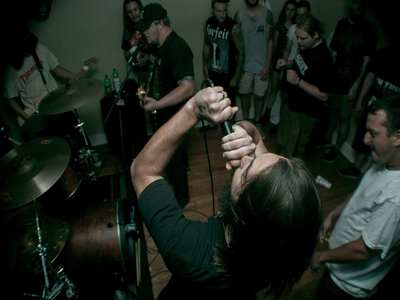

The Beaters
Guitarist Mark Bozier died in 1990 at the age of 26 from heart failure as a result of increased asthma attacks after a period of time in hospital and not of any drug or alcohol disorder as has been incorrectly reported in recent years. The band reformed in 2003, releasing further material in CD and vinyl formats. Since then, the band has played at big punk festivals such as Rebellion Festival and Punk n' Disorderly in Berlin and Vienna, and at Rebellion UK shows. PFS recruited a new guitarist in early 2008. Ashley Shannon stayed with the band for 18 months playing shows across Europe notable in Bratislava, Berlin and Vienna. Robin Folland re-joined the band in November 2009, and Ashley departed - for a short while at least, with an open invitation to return. In 2010 the band appeared at the Rebellion festivals in England and Italy ( Venice ) Robin, Keith, Steve and Griff are now back together and after a worrying illness ( Keith suffered a heart attack and has heart disease called atrial fibrilation ) they plan to continue the PFS project for as long as is possible.

Carl Cox
The foundations of rock music are in rock and roll, which originated in the United States during the late 1940s and early 1950s, and quickly spread to much of the rest of the world. Its immediate origins lay in a melding of various black musical genres of the time, including rhythm and blues and gospel music, with country and western.[24] In 1951, Cleveland, Ohio disc jockey Alan Freed began playing rhythm and blues music (then termed "race music") for a multi-racial audience, and is credited with first using the phrase "rock and roll" to describe the music.

Richie Hawtin
In Western classical music, smaller ensembles are called chamber music ensembles. The terms duet, trio, quartet, quintet, sextet, septet, octet, nonet and dectet describe groups of two up to ten musicians, respectively. A group of eleven musicians, such as found in The Carnival of the Animals, is called either a hendectet or an undectet (see Latin numerical prefixes). A soloist playing unaccompanied (e.g., a pianist playing a solo piano piece or a cellist playing a Bach suite for unaccompanied cello) is not an ensemble because it only contains one musician.